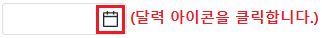

InputCalendar의 속성 'weekStartsOn'의 설정 값에 따른 기능을 비교하는 예제입니다. 이 속성은 달력 아이콘 클릭하면 생성되는 달력의 시작 요일을 지정하는 기능을 제공합니다.
설정 값에 따른 시작 요일은 다음과 같습니다.
0: [default] 일
1: 월
2: 화
3: 수
4: 목
5: 금
6: 토
달력의 시작 요일을 '일요일'로 지정하기
달력의 시작 요일을 '월요일'로 지정하기
STEP 1. 달력 아이콘을 클릭합니다.
예제 영역 [(기본 설정 값) 달력의 시작 요일을 '일요일'로 지정하기]에 구성된 InputCalendar의 달력 아이콘을 클릭합니다.그림 1.브라우저(Chrome) 실행 예시

STEP 2. 실행된 결과를 확인합니다.
달력의 시작 요일이 '일'부터 시작됩니다.
그림 2.브라우저(Chrome) 실행 예시 - 달력의 하단 영역 확인
STEP 1. 달력 아이콘을 클릭합니다.
예제 영역 [달력의 시작 요일을 '월요일'로 지정하기]에 구성된 InputCalendar의 달력 아이콘을 클릭합니다.그림 3.브라우저(Chrome) 실행 예시
STEP 2. 실행된 결과를 확인합니다.
달력의 시작 요일이 '월'부터 시작됩니다.
그림 4.브라우저(Chrome) 실행 예시 - 달력의 하단 영역 확인
InputCalendar의 속성을 정의합니다.
[필수] weekStartsOn="1"
(옵션 설명)
- 0: [default] 일
- 1: 월
- 2: 화
- 3: 수
- 4: 목
- 5: 금
- 6: 토
그림 5.웹스퀘어5 SP5 스튜디오의 Property View(속성창) 예시
[소스 코드 예시]
<!-- inputCalendar 의 소스 본문 예시 --> <w2:inputCalendar weekStartsOn="1"> </w2:inputCalendar>
weekStartsOn
[웹스퀘어5 SP5 개발 가이드] InputCalendar
링크 : https://docs1.inswave.com/sp5_user_guide/8df43d1f59fab704#579244ff7483b50c